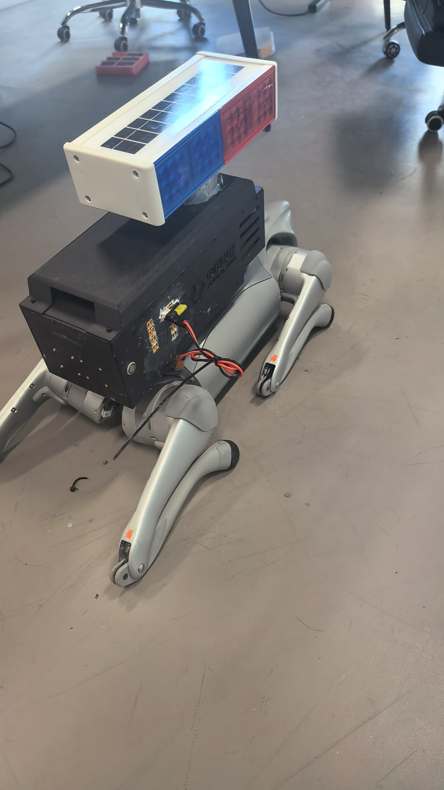

GeQuan Technology · Field deployment
Quadruped Robots for Industrial Inspection
I helped integrate onboard perception, decision-making, and motion control for autonomous patrols. Our team tested the integrated system at two industrial sites, including its ability to detect hazards and send alerts.
Robot perception · Motion control · Field testing
